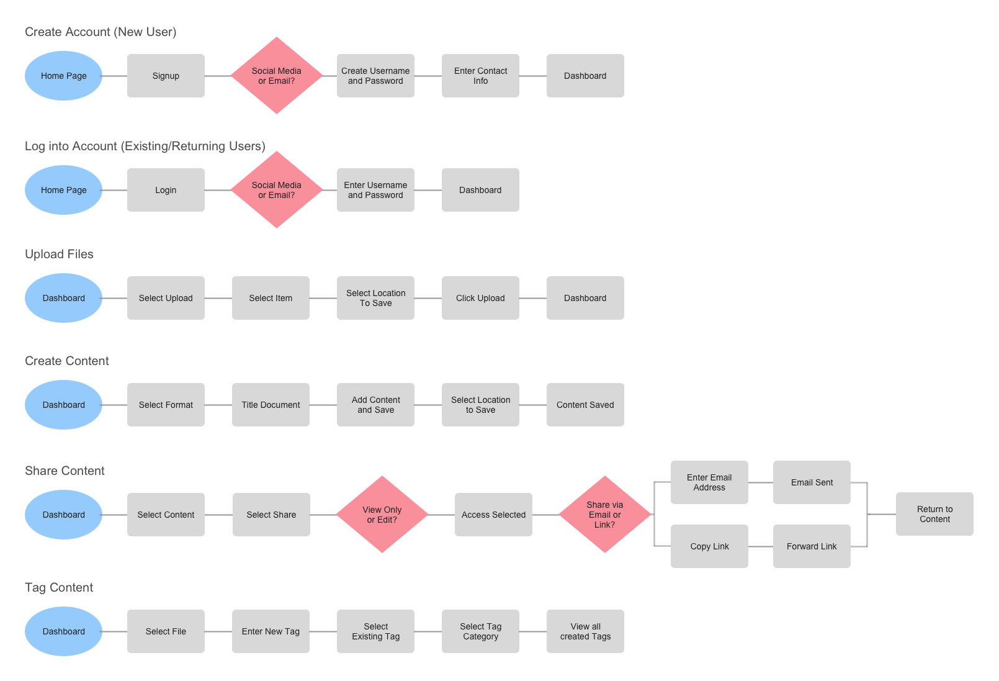
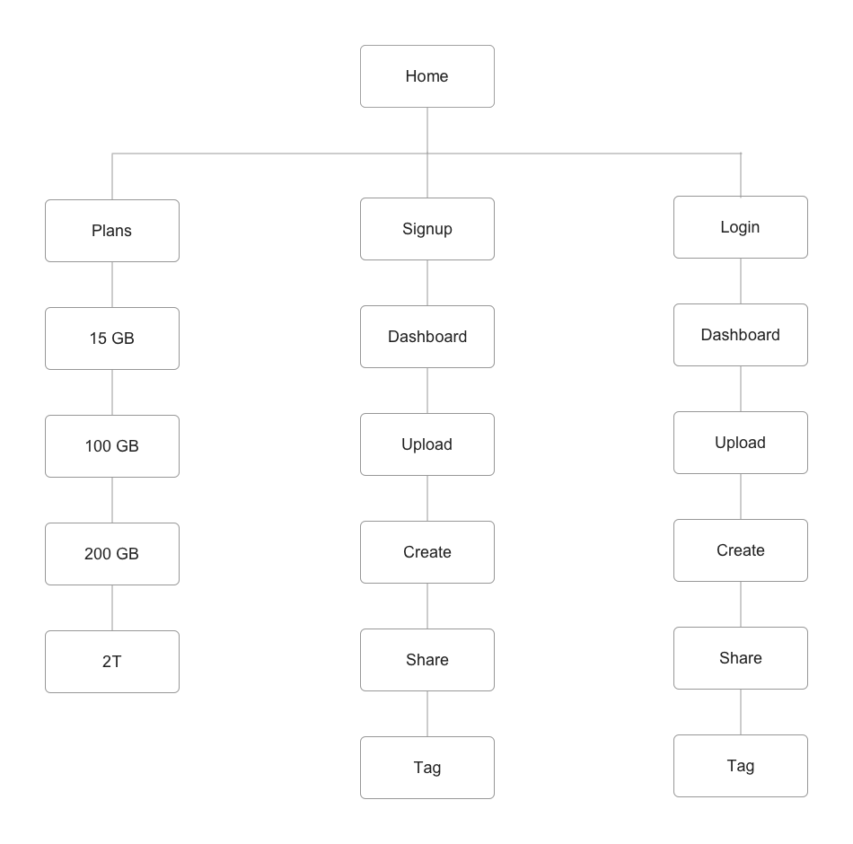
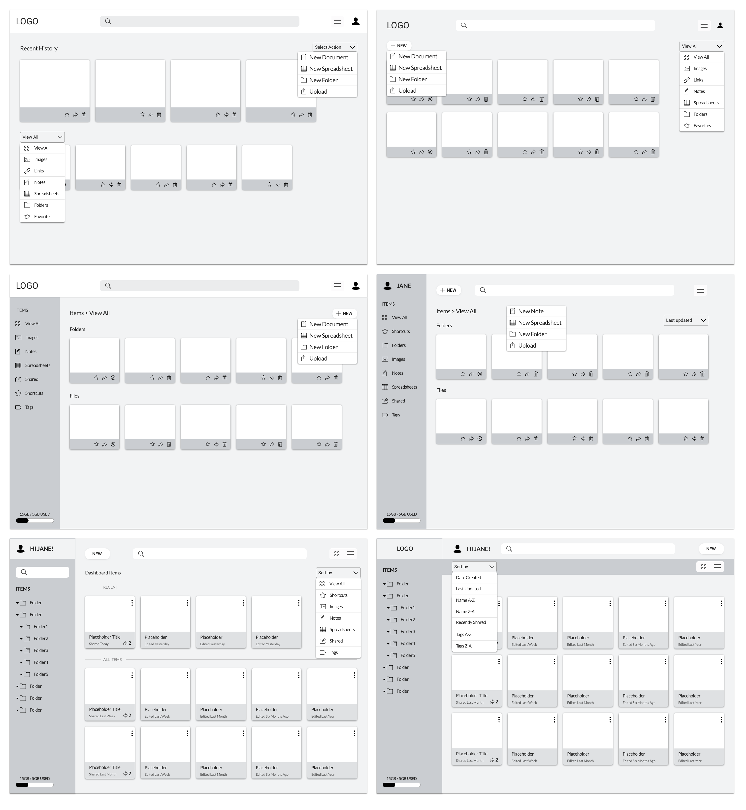

“Light doesn’t need a medium to travel through. It can travel through the vacuum of space.”
Prism Space
01 Introduction
Prism Space is a secure cloud storage service that minimizes the chaos of information by providing users a unique space to upload important items, create content, and share memories to connect with others.
02 My Role
Research | Strategy | Design | Prototyping | Testing
03 Problem
Users are in need
04 Solution
Prism Space provides
Discovery
User Research
To better understand the product and user needs the following research tools were used: compeitive analysis, user survey, and personas.
01 Competitive Analysis
The following competitors were studied for this project: Google Drive, EverNote, and Dropbox. Research on each competitor provided great insight into what worked well and what areas of improvement we could tackle better.
These competitors are excellent at simplifying the data storage process, allowing users to create various forms of information, and collaborating easily with others.
Identify key content users want to store and create a product that simplifies the process of storing, organizing, and sharing important items. Create a user-friendly mobile app that does not require additional tools to utilize all of its features.
Google Drive requires multiple apps for each content format (ex: word, spreadsheets, etc.) which is not user-friendly for creating and organizing information on a mobile app.
There are many big name competitors in the market providing this service for years now. We would have a learning curve to catch-up, learn what they are doing well, and what we can do better.
02 User Survey
The research was performed with a user survey sent out to contacts via social media outlets and Reddit. The focus of the survey was to get an understanding of users current behaviors, users preferences, and note any missing features that would be an asset to participants.
Of participants used these services for both personal and business use.
*0% used for business only.
Of participants used these services on Desktop.
*only 10% on mobile!
Of participants do not prefer mobile use of these services.
*only 30% want desktop and mobile.
Of participants that took this survey are students. The other 42% work full-time.
Disclaimer: Users were able to pick more than one answer.
Of particpants mainly upload images and content (75%)
Of participants upload content to free space on personal devices.
Of participants share WEEKLY and more often than business users.
Of participants share word documents and 67% share images.
Disclaimer: Users were able to pick more than one answer.
Of partipants mainly share content compared to personal users that mainly upload content.
Of particpants share daily compared to personal users who share weekly.
Of participants share word documents and 58% share spreadsheets.
Of participants collaborate daily on word docs and spreadsheets.
Disclaimer: Users were able to pick more than one answer.
The survey findings show that participants behavior differently with Cloud Storage and Organizational services depending on their personal versus business needs. However, all users made it clear they do not use these services strictly for professional reasons. In addition, desktop usage was rated higher than mobile and tablet use. This makes sense for students or professionals in need of creating documents, sharing, and collaborating with others. They don't need the limitations other devices would introduce. It is clear that participants are most interested in a desktop service that is flexible to their different roles and responsibilities.
03 Personas
The results of the survey findings were gathered to create personas to design a product that would address the participant's needs. The following personas gave voice to the participants in the following ways: demographics, motivations, and frustrations.

Occupation: Designer
Age: 35
Location: Boston, MA
Experience: Moderate
Needs:
As an everyday user of cloud storage sites he wants to upload both personal and professional creative projects.
He enjoys sharing information with others. He’s mostly interested in uploading and storing pictures and documents. His second priority is collaborating with team members on various projects.
Frustrations:
Needs a service that is safe to use, can share content, and get feedback from others on projects.

Occupation: Full-Time Student
Age: 22
Location: Orlando, FL
Experience: Beginner
Needs:
As a student she is most interested in features that complement her needs making student life more manageable. She needs features for note taking, storing course documents, organizing study materials,
and collaborating on projects with peers.
Frustrations:
Keeping notes on all courses organized and easy to find is a struggle. Having real time updates and comments on collaborated projects with peers is very important.

Occupation: Manager
Age: 30
Location: Chicago, IL
Experience: Advance
Needs:
As a business user she wants a service to help manage and share information throughout the business. She needs to save, organize, and share business content for easier communication between teams, stakeholders, and clients.
Frustrations:
Difficulty finding a tool with features that would help make their process efficient and keep the business running smoothly.
Information Architecture
intro paragraph
01 User Flows
add paragraph summarizing process

02 Sitemap
add paragraph summarizing process

Process
Design Iterations
add paragraph summarizing iterations experience with Sketches and Wireframes
01 Sketches
Sketches help place me in the user's shoes to define the process and journey organically. I can quickly erase and scratch out any mistakes before committing to wireframes. I love getting creative and going through as many iterations as needed before narrowing down a few great options.

02 Wireframes
The wireframes went through many iterations to determine the content to include and in what format that would best serve the user. The iterations underwent preference tests to narrow down the most functional options.

03 Mockups
The feedback gathered from the Wireframe User Testing was used to improve on and drive the direction of the high-fidelity designs. In this round of iterations, improvements to areas that were inconsistent or did not function well for users were addressed.

User Testing
The two types of testing performed for this case study was remote and in person moderated testing and preference testing.
01 Moderate Testing
With the in-person/remote user testing, the participants completed three tasks: sign up for an account, add a piece of content, and organize a form of content to the dashboard. They were encouraged to speak their thoughts out loud on the experience of navigating through each page. With this approach to testing, I could observe the exact areas of the test participants struggled with and ask prompting questions to collect data.
[add results and/or video after retesting]
02 Perference Testing
A Preference Test, was preferred to gather insight on the features that participants would find most useful. This testing tool was utilized to help make the best design for users and keep moving forward. Participants voted on UsabilityHub for their preferred design. User insight was gathered on the content layout, features, and design choices for the dashboard.
The results were very helpful in guiding the evolution of wireframes and in finalizing design choices. For example, [talk about recent dashboard designs]
[add imagery of new testing? Option A and B?]
Conclusion
01 Lessons Learned
In the beginning of this project, I made the assumption that users want a tool to create and collaborate mostly on their business needs. The survey results found...
02 Next Steps
What are my next steps in this project? mobile? More testing?